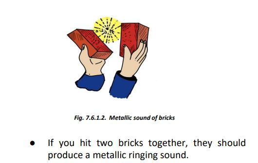
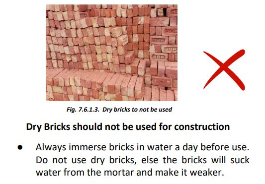
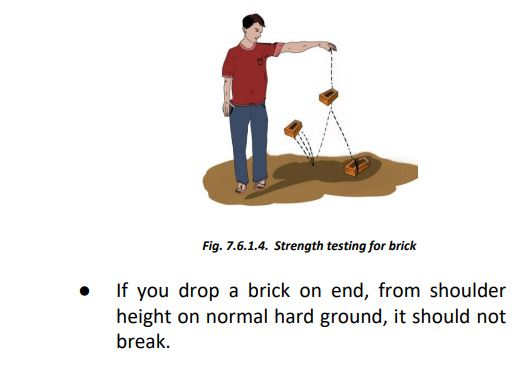
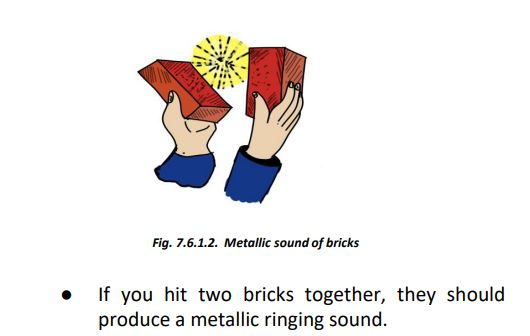
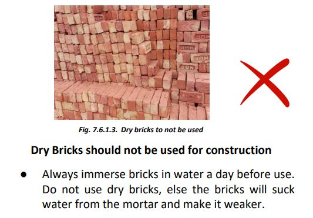
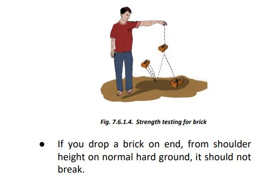
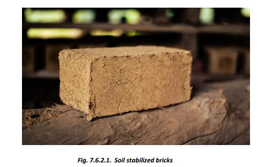
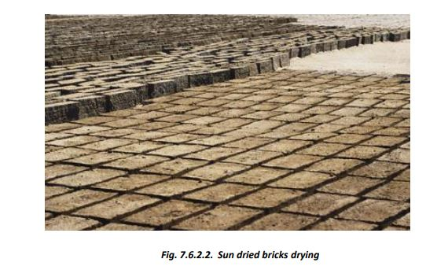
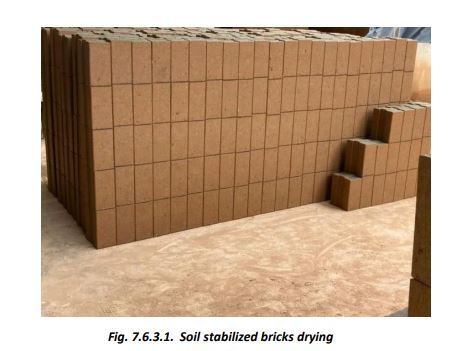

Bricks
7.6.1. Burnt
 





7.6.2. Burnt
 
Sun Dried Stabilized Bricks
To check suitability of local soil for making sun-dried bricks, make a 3-inch diameter ball of moist clay in hand. Allow it to dry. If the soil is too sandy, the ball will break under pressure between fingers; if the soil is too clayey, the ball will develop cracks on drying. A suitable clay shall give a strong, crack-free ball. A good soil contains about 35 to 40% clay + silt; the rest is fine sand. The bricks can be stabilized by adding lime/cement in appropriate quantities and mixing thoroughly.
These bricks have lower strength compared to fired bricks and are affected by moisture. They can be used in dry conditions in cement-sand mortar under proper guidance. In dry regions, 35 cm thick load-bearing walls can be constructed using clay bricks (strength: 20 kg/sqcm or better) in cement mortar for two-storey houses, with appropriate earthquake and moisture protection measures.
The walls can be protected from moisture by ferro-cement treatment or plaster for longer life and better finish.
7.6.3. Stabilized Soil Brick

Cement-lime stabilized soil bricks can also be cast on-site in regions where good clay is available but burnt clay bricks or cement-lime stabilized bricks are costly or not locally available.
1. Soil Analysis: Dissolve one-third glass of soil in three-fourths of a glass of water, mix thoroughly, and let it settle for 24 hours. Check if the clay + silt deposit is 30-40% of the total deposit.
2. Adjustment: If the clay + silt deposit exceeds 40%, mix in sand. For stabilization, add 5-6% cement or 6% lime by weight of the soil mass, and knead thoroughly with the required amount of water.
3. Brick/Block Formation: Ensure the mix is slightly wet and use a hand compressing machine to make bricks/blocks. Leave them to rest for 24-48 hours, then stack them in layers not exceeding 3 layers.
4. Curing: Keep the bricks/blocks covered and moist for 15 days in warm climates or 20 days in cold climates to allow proper curing.
5. Masonry Construction: Use the bricks/blocks when they are at least 30 days old and fully dry. Masonry can be done using 1:6 cement-sand mortar or soil-cement mortar with about 7% cement.
6. Start water curing: Start water curing after 24 hours for cement + sand mortar and 36 hours for stabilized clay mortar.